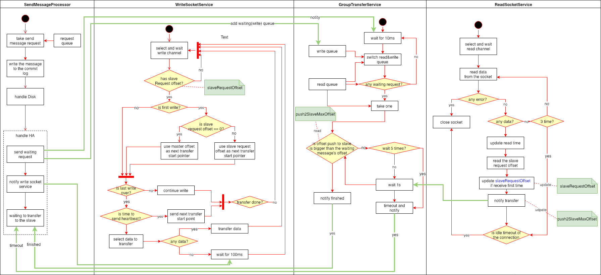
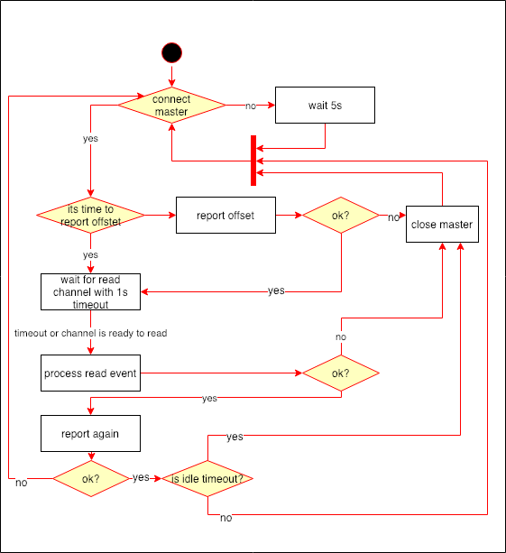

HA原理
RocketMQ支持主结点的数据同步到从结点。同步的数据依赖于当前从结点的状态。从结点连接到主结点的时候会上报自己的当前commitlog的最大偏移量。主结点收到以后会根据这个值计算出传输的起始位置，如果上报的commitlog的最大偏移量：
- 等于0，主结点会从当前最大偏移量减去一个log文件大小那个位置开始传输。如果小于0，那么从0开始传输。
- 大于0，从该值开始传输。
- 小于0，这种情况不存在。
所以，这里我们可以知道如果从结点已经就有数据情况，如果数据不是从主结点同步过来的，那么同步之后就会有问题了。比如说：从结点已经有10000条数据，同时某个topic，暂时就叫OLD_TOPIC的消费队列0长度1000。这个时候，主结点就会从第10000条数据开始同步，可能会发送几种情况：
- 主结点没有10000数据，那么就不会同步数据，造成从结点上面数据丢失。
- 主结点有超过10000数据，但是它的OLD_TOPIC的消费队列0的长度小于1000，那么同步过来的数据就会覆盖原来的数据。
所以，从结点的初始状态需要从0开始或者本来就是和主同步过的状态。因此，在删除topic的时候从结点要保证删除干净，不然从结点就会脏数据，影响消费。
为什么这样同步不会有问题呢？
那是因为同步的数据里面包含了具体消费队列ID，队列中的偏移量以及消息的偏移量，所以同步的时候能够写到同一个位置。
主结点同步逻辑

发送一条消息的时候，在开启SYNC_MASTER情况下，需要四个线程合作才能完成消息的发送。
- SendMessageProcessor负责处理接收发送消息的请求并落盘（异步或者同步），接着向GroupTransferService发送等待同步完成的请求，然后等待知道超时或者GroupTransferService通知同步完成。同时，还会同时WriteSocketService有数据可以写了。
- WriteSocketService负责根据从结点上报的位置（变量
slaveRequestOffset），不断的向从结点传输数据。同时会维护和从结点的一个心跳，如果一段时间没有通不过数据，就会发送一个消息头，包含当前同步的起始位置。 - GroupTransferService不断的轮询比较当前已经被从结点同步的最大偏移（变量
push2SlaveMaxOffset）和SendMessageProcessor发送过来的请求中包含的偏移量，如果大于或者等于就会通知SendMessageProcessor。 - ReadSocketService负责读取从结点上报上来的同步偏移量。更新变量
push2SlaveMaxOffset和slaveRequestOffset并通知GroupTransferService。从而，它也会影响WriteSocketService的行为。同时，它还维护着和从结点连接的过期工作，如果超过指定时间没有收到消息就会断开连接，同时会停止WriteSocketService。
从结点同步逻辑

从结点的同步逻辑相对简单主要做几件事情：
- 管理和主结点的连接，如果超过一段时间没有收到主点结点的数据，就会断开连接。这个时间戳保存在变量
lastWriteTimestamp中，刚刚连接上主结点和从主结点读到数据都会更新该变量。 - 上报当前commitlog的最大偏移量，该行为会发生三个地方：a.写完一个消息；b.处理完当前收到的所有数据；c.一段时间内没有收到主结点的数据。
- 维护收到的数据。这里有两个接收数据的buffer，主要方便处理当一个buffer的空间用完以后处理剩余的消息。一个buffer的情况下，先拷贝到一个临时byte数据，然后再拷贝回去，需要两次内存拷贝。如果两个buffer只需要一次拷贝。
- 写消息。把从主结点同步过来的数据写到磁盘。收到数据的时候会判断主结点发过来的偏移量是否等于自己当前的偏移量如果不一样就会断开和主结点的连接。
- 任何从连接中读数据的时候如果有错误就会断开连接。